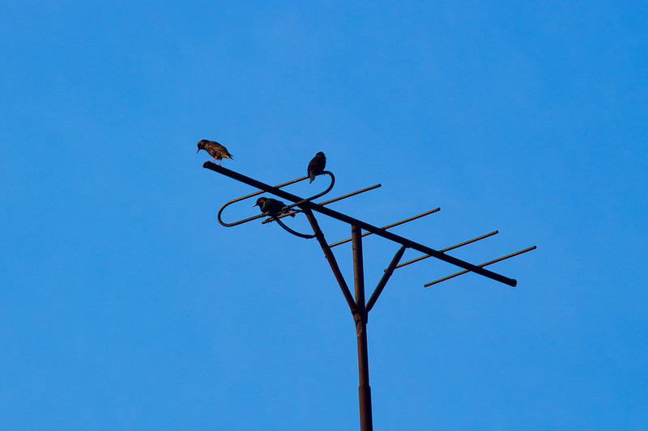

I have been told of NGOs job applications that require to include the candidate’s Twitter profile. Even when not that explicit, a curated Twitter account is increasingly important for the academic and academic-adjacent job market, if only for networking. As I am active on Twitter from October 2012, I had the occasion to give some advice on how to start on the social media (for example to my wife!). As it seems they worked, I have been suggested to put them in a blog post, so here it is.
First of all, a few notes. This post is not about the technical basics (how to open an account, how to tweet, how to retweet, etc.), I consider you are good with those, or you can easily find this information somewhere else. Second, it is not about becoming a twitter star with thousands of followers, but about having a decent profile for your career development. The bits of advice are pretty general and they should work for an average user. Of course, there are plenty of exceptions and, to become a Twitter star, what counts is probably being already a star, the actual content you share and, mostly, luck. But, again, this is not our goal. Finally, all this is focused on academic or closely linked profiles, that are the only ones for which I have a bit of experience.
-
Time. It seems many people are worried that they do not have enough time to have a curated Twitter profile. While obviously Twitter is a rabbit hole where one can lose all the time in the world, this is not necessary. Nobody has to be completely updated on what the accounts they follow tweet: this is not only impossible but also useless. For the beginning, an hour a week it is more than sufficient to follow some people, read some tweets and post content. Two sessions of half an hour or less, for example, will be enough.
-
Have a curated profile. Use a picture of yourself where you can be recognised. The short bio is important: avoid the witty sentence and put relevant information and links (if useful). Include a link to your website. Here, as an example, my profile. Again, there are many exceptions, but this works on average.
-
Following and followers. Start by following a few hundred accounts, perhaps have a goal (“Following 200 accounts for the end of the month”). Follow accounts that are related to your field, big and small names, more than the people that you know. Twitter is not about keeping in contact, but about exchanging information. How can you find them? Search with keywords and follow the advice from Twitter. Here a useful shortcut: when you find a reliable profile in your field, that possibly does not follow too many accounts, go through their “following” and follow the ones that seem relevant. You also want to acquire followers. This mostly depends on the content that you share (see below), but ideally you want that a reasonable proportion of the account you follow will follow you back. Usually this happens, say around 50% at the beginning. When you will have more followers you will be more twitter-attractive, and the probability of begin followed back will grow. If you really are concerned about the number of followers, follow accounts that have more or less the same number of followers/following, as this probably means that they follow back whoever follows them.
-
When to tweet. In general, the more you tweet, the better. However, time is not infinite, and there are many better things to do in life. Still, you should tweet original content (i.e. not a retweeet) at least one or two times a week. This signals your account is active.
-
What to tweet. Things related to your professional topic. Do not tweet what you think about X - or do not do it often - probably not many care. Share information like links to papers, blogs, pieces of news, etc. and, in case, what you think about that.
-
Stick to one topic. The most important - I think - advice about content: be consistent. Do not tweet once about your scientific field, then about your cat, then about your favourite Sichuan dish, then the anti-Trump rant. People will follow and support you (with likes and retweets) if you provide a consistent and up-to-date information about one topic: “that’s one of the accounts to follow if you are interested in X” (where X is “anthropology”, “conservation”, “history of Middle East” or whatever). If I follow you because I am interested in conservation, I probably do not care about what you ate last night (there are other social media for this). One out-of-topic tweet from time to time is ok, but not too many. Of course you can have two related topics (say, ehm, “cultural evolution” and “digital media”) Two unrelated topics? Not sure. Each time I want to tweet something unrelated to my research, for example politics, I refrain, and I think it is good.
-
How to find relevant content. This is the difficult part, here is what works for me. A good source of new scientific articles are Google Scholar alerts (of course you have a Google Scholar profile). They generally fit very well with your research, so you should be on the safe side. Another source is, of course, Twitter itself (for me it has replaced almost all the official journals’ alerts): retweet relevant material from others (see also below for the “Retweet with comment”). A good way to provide new content even with retweets is to retweet material from more obscure accounts, or accounts unrelated to your field. Retweeting the last paper of the star researcher with 50,000 followers will not provide new content to your followers, but retweeting the interesting paper of a less known researcher, or showing how something in another field is related to yours will. News, conferences, open positions related to your field are also good content. At the end of the day, however, this will be about what you read and what you find interesting, so: be curious.
-
Check the content. Read before sharing is the basic advice. But, really, do it. You do not have to read a full scientific article before you tweet it, but you want to be sure that it is about what is supposed to be and that, for example, the link points to the correct place, etc.
-
Personalise the content. The other advantage of reading before sharing is that you can personalise the tweet, and this is added value. You can quickly say why the article, or the piece of news, is interesting or criticizable, this is better than just tweeting the title (but this is also ok). This is especially useful for reteweets: you can “Retweet with comment” so that, again, you add some personal information, but also, the tweet is associated in the timeline to your profile, so it is your tweet.
-
Photos and videos. They do make tweets more attractive. If you tweet an article you may want to include one of the plots, or some related image. This is why I put in each blog post a picture, even if not very related (including this one): when sharing it on Twitter, the small picture appears together with the link.
-
Hashtags. I do not use them, but it does seem they increase the number of likes and retweets (which in turn will ultimately increase the number of your followers) so I guess a moderate use (one, maximum two) in some of the tweets, when they are relevant, may be a good strategy.
-
Like. There are various reasons to like relevant tweets from other users. They will know about you, you can use them as bookmarks, and you possibly train the algorithm that select which tweets you will see more prominently. Also like all replies to your tweets, if they are not offensive, and if they are at least related, because why not.
-
Be nice. In eight years of Twitter, I believe I got involved in quarrels two or three times. Of course, I think it was not my fault, but that is too easy. In any case, there is nothing to gain. Twitter is not the place for long and nuanced discussions. This is fine, as long as one is aware of it. I found Twitter tremendously useful for sharing and discovering interesting stuff and for many good conversations and, so far, the balance useful/annoying has been largely positive.